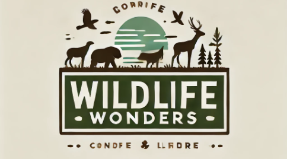

Wildlife Wonders
The Wild Wonders website is a comprehensive digital platform dedicated to showcasing the beauty and diversity of wildlife, with a special focus on animals and birds from around the world. It serves as both an educational resource and a visually captivating experience for nature enthusiasts, students, and conservationists alike.
The site features a wide range of information on different species, including their habitats, behaviors, and conservation status. With engaging articles, stunning photography, and interactive media, Wild Wonders offers a unique window into the natural world and encourages visitors to appreciate and protect wildlife.

In addition to providing detailed descriptions of animals and birds, Wild Wonders often shares updates on wildlife conservation efforts, highlighting the importance of biodiversity and sustainable practices.
Whether you're researching specific species or just exploring the wonders of nature, this website offers a user-friendly and enriching experience for all ages.